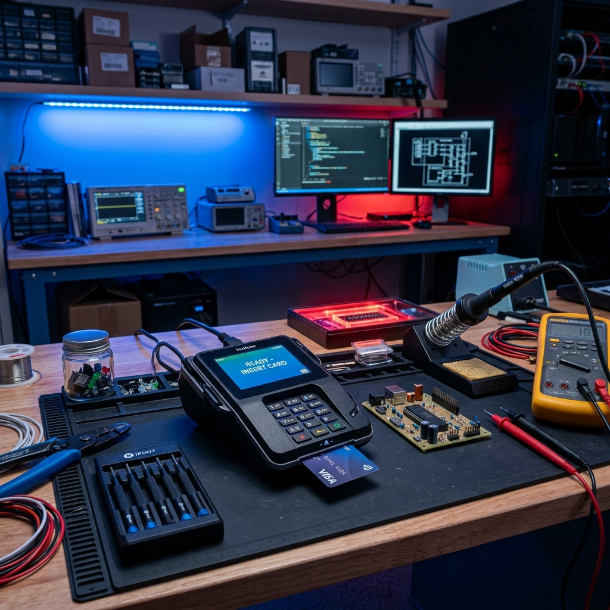
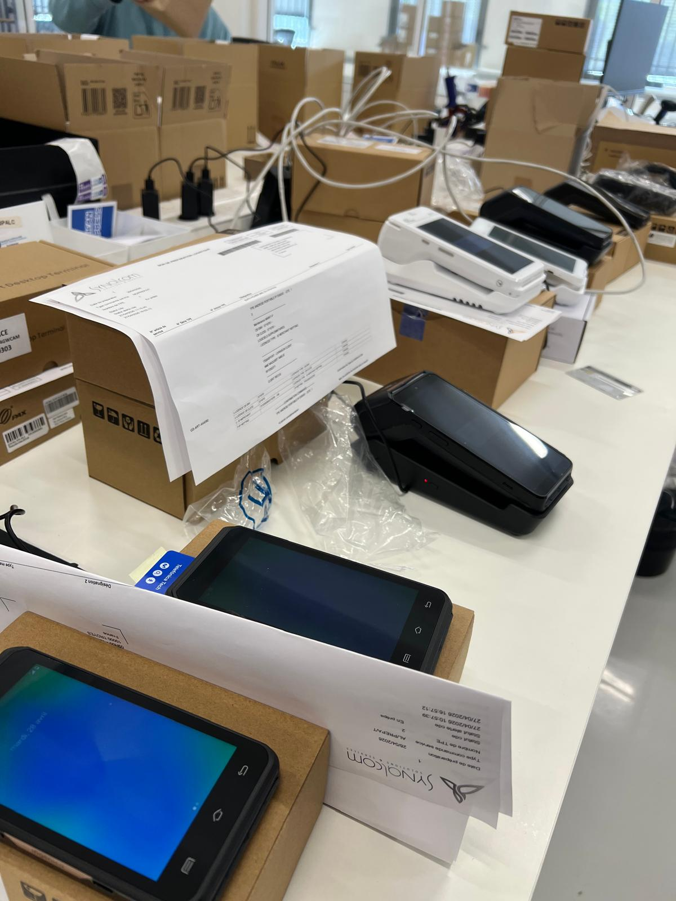
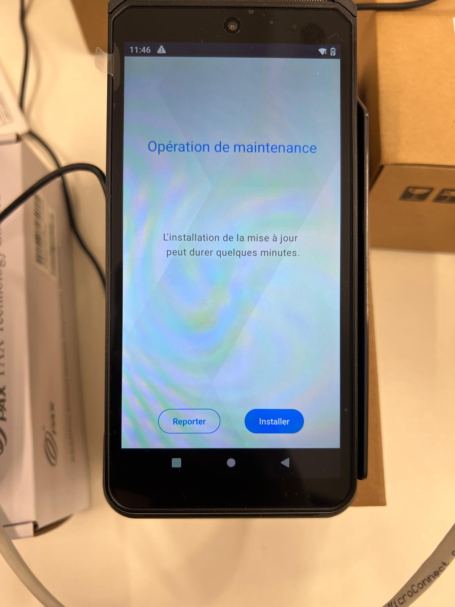
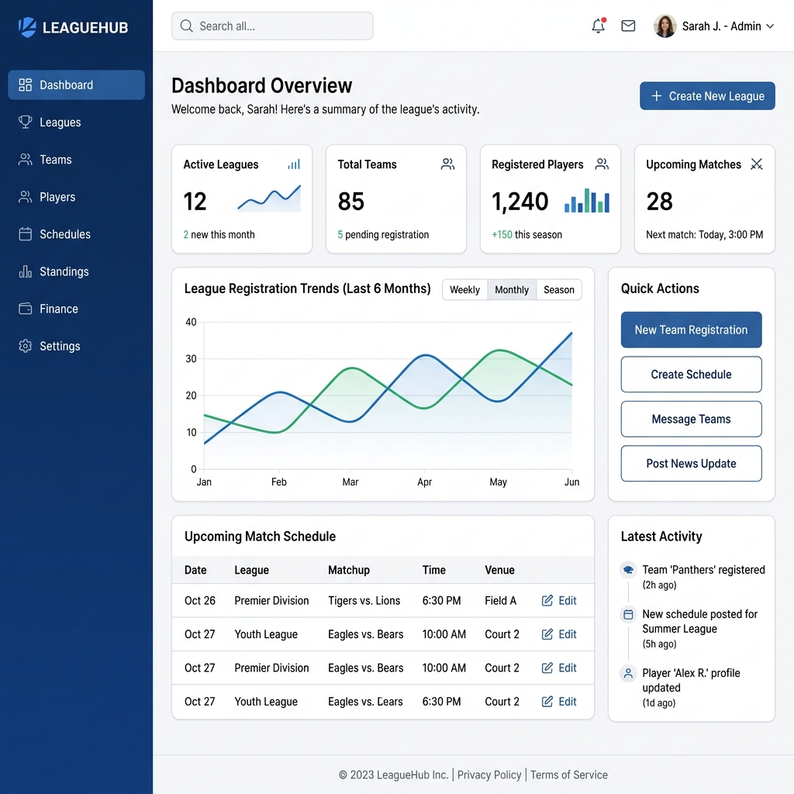
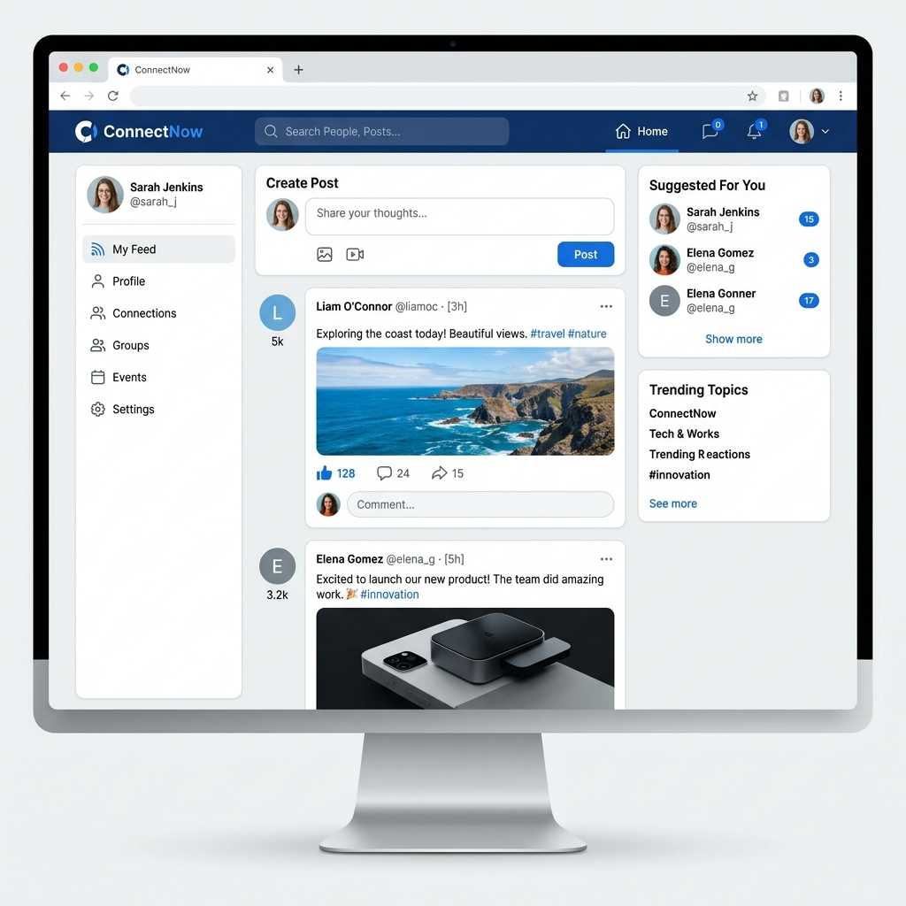
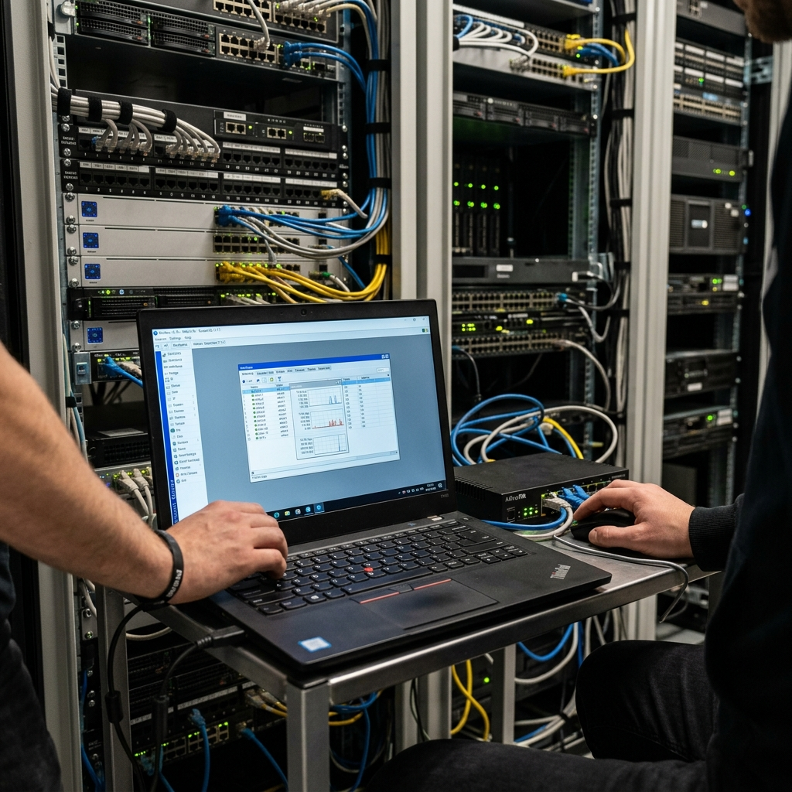
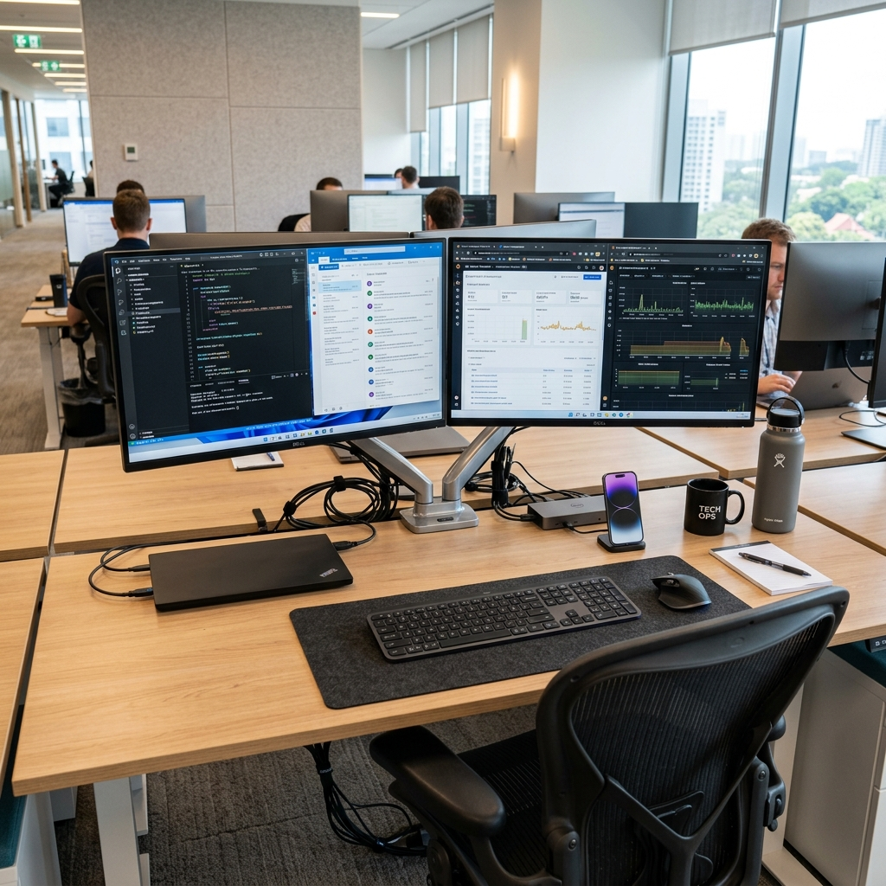

Bonjour, je suis Ilyas Diallo
Étudiant en BTS SIO option SLAM
Passionné par le développement d'applications et les solutions technologiques, je suis actuellement en alternance chez Synalcom.
À propos de moi
Étudiant motivé et rigoureux, je développe des compétences en informatique, notamment en support technique, déploiement de solutions et gestion d’équipements.
Mon parcours m'a permis d'acquérir une expérience concrète dans la configuration et la mise en service de solutions de paiement professionnelles.
Mon Parcours
-
2024 - 2026
BTS SIO option SLAM
2ème année : ITIC Paris | 1ère année : Aurlom, Paris
-
2022 - 2024
Baccalauréat STMG
Lycée Albert Einstein, Sainte-Geneviève-des-Bois
Expérience Professionnelle
Synalcom
Alternant Technicien InformatiqueContexte : Entreprise spécialisée dans les solutions de paiement électronique pour les professionnels (TPE, systèmes de paiement).
Travail au sein du service technique chargé de préparer et configurer les terminaux avant leur mise en service chez les commerçants.
Missions principales :
- Préparation et déploiement de terminaux de paiement (TPE)
- Programmation complète des appareils (données commerçant, paramétrage bancaire)
- Installation et vérification des mises à jour logicielles
- Tests de bon fonctionnement et validation technique avant expédition
- Installation et configuration de postes de travail (Windows 10 & 11)
- Utilisation de l'ERP Navision pour la gestion des dossiers clients et stocks
- Enregistrement et suivi des TPE (numéros de série, localisation) via logiciel de supervision
- Coordination inter-services pour le suivi en temps réel des équipements
- Gestion logistique : emballage et envoi des équipements
Compétences
Développement
Environnement & Outils
Certifications
Missions & Projets (E4)

Déploiement de Terminaux de Paiement
Configuration et mise en service complète de TPE pour les commerçants chez Synalcom.
En savoir plus
Gestion et Suivi du Parc TPE
Utilisation de Navision et d'outils de supervision pour le classement, l'enregistrement et la traçabilité des terminaux (numéros de série, localisation).
En savoir plus
Installation de Postes Windows 10 & 11
Préparation, installation et configuration complète de postes de travail sous Windows 10 et 11 pour les utilisateurs de l'entreprise.
En savoir plus
Application de gestion M2L
Développement d'une application web de gestion pour la Maison des Ligues de Lorraine (M2L). Gestion des ligues, des réservations et des utilisateurs.

Plateforme sociale type Twitter
Conception et réalisation d'un réseau social permettant la publication de messages en temps réel, le suivi d'utilisateurs et la gestion de profils.

Configuration réseau MikroTik
Simulation et configuration d'une infrastructure réseau sécurisée : routage statique, dynamique et mise en place de VLANs.

Installation poste informatique
Installation d'un environnement de travail complet avec configuration système et logiciels.
Veille Technologique (E6)
Thème : Les innovations technologiques et l'IA de Lenovo pour la Coupe du Monde de la FIFA 2026
Outils utilisés : Sites officiels (FIFA, Lenovo), Actualités technologiques, Rapports d'innovation
Football AI Pro
Analyse avancée des performances et aide à la stratégie grâce à un assistant intelligent pour les équipes.
Avatars 3D & Expérience Fan
Immersion accrue grâce à des avatars réalistes et des innovations en réalité augmentée pour les supporters.
Arbitrage & Data Capture
Systèmes de caméras nouvelle génération assistés par l'IA pour une précision d'arbitrage optimale.
Me Contacter
ilyasdiallo12@gmail.com
077-792602
Île-de-France